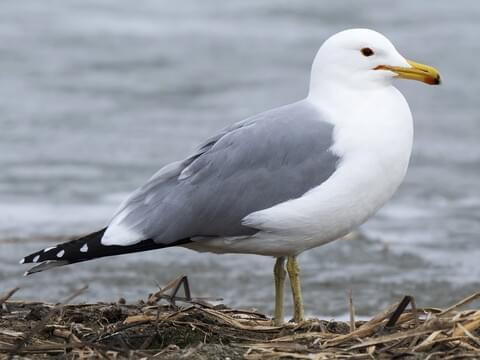

The Trumpeter Swan is the largest species of swan and has a neck that is the same length as its body!
They live in wetlands and have a lifespan of up to 30 years. These birds mate for life and can lay 4 to 5 eggs per clutch.
Seeing a Trumpeter Swan is a beautiful sight!

Photo of California Gull
Photo of American White Pelican
American White Pelican - Pelecanus erythrorhynchos
The American White Pelican is one of the largest North American birds, and is known for its ability to extend its neck to allow for more water and food to enter its mouth.
This species are experts at stealing food, so if you have any trail mix on you, beware! These birds forage for their food during the day,
but in breeding season they switch to foraging at night.
Peregrine Falcons - Falco peregrinus
The Peregrine Falcon lives on shorelines and preys on smaller birds. These raptors are known to be trained in captivity and are monitored in order to reestablish population.
They are found on every continent in the world besides Antarctica. From below, these birds have a white belly with black markings, so they can be easily distinguished in flight.